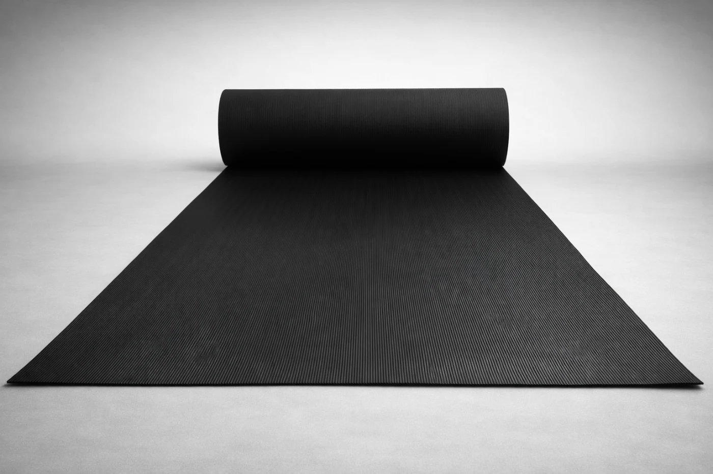

Mat Depot, S.A. de C.V. suministra tapetes y pisos de hule y PVC para espacios industriales, comerciales y deportivos. Atiende solicitudes de mayoreo, menudeo y proyectos a medida, y revisa con el cliente el uso, el tráfico y la superficie antes de cotizar. La historia, la misión y la visión están en Nosotros.
El catálogo reúne fichas con medidas, presentación y usos publicados. Los precios no aparecen en el sitio: se confirman al cotizar, junto con existencias y documentación del modelo. Estas son las líneas publicadas:
El listado completo está en el catálogo. Se pueden revisar hasta tres fichas en el comparador.

La operación está en C. Popocatépetl 42, San Javier, C.P. 54030, Tlalnepantla de Baz, Estado de México. El horario publicado es de lunes a viernes, de 9:00 a 18:00. Las visitas al almacén se atienden con cita previa.
La cobertura publicada incluye entregas en la Ciudad de México y el Área Metropolitana, y envíos al resto de la República mexicana. El costo y el plazo se confirman para cada pedido. El mapa y las condiciones de visita están en Ubicación. Los productos de hule y el mayoreo para el Estado de México se detallan en tapetes de hule en Tlalnepantla.
Teléfonos (55) 9626 5258 y (55) 9626 5259. WhatsApp (55) 4494 3014. Correo matdepotmx@gmail.com. La solicitud por formulario está en Contacto.
El sitio oficial de Mat Depot es matdepotmex.com. Mat Depot no tiene relación con matdepot.com.mx, que corresponde a otra empresa.